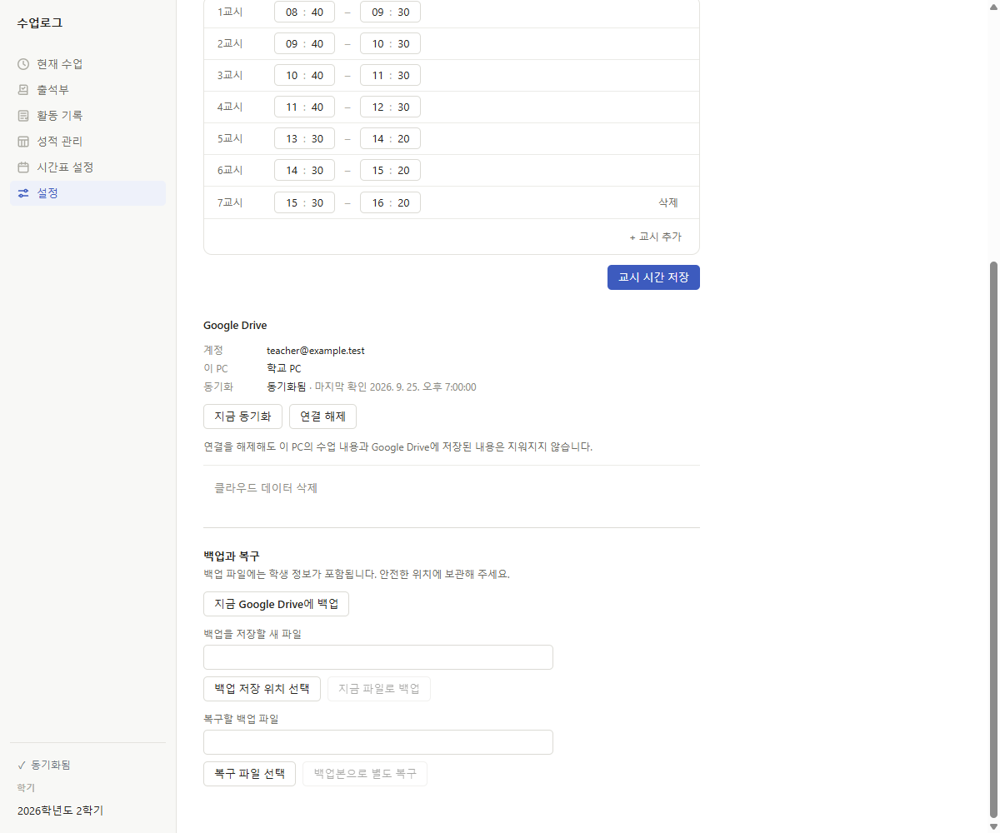

Windows desktop app
수업 기록을
수업 기록을
더 단순하게.
학생 명단부터 시간표, 출결과 발표, 수행평가와 활동 기록까지. 수업로그는 교사의 실제 수업 흐름을 한 곳에서 관리하기 위한 Windows 데스크톱 앱입니다.
- 학급·학생 관리
- 주간 시간표
- 출결·발표 기록
- 수행평가
- 활동 기록
- Google Drive 동기화


Product overview
교사의 하루에 맞춰 설계했습니다.
수업로그는 기능을 흩어놓지 않습니다. 시간표를 정리하고, 수업 중 출결과 발표를 기록하고, 이어서 수행평가와 활동 기록까지 자연스럽게 연결됩니다.
학급과 학생을 준비합니다
학년·반 구조와 학생 명단을 먼저 정리해 두면 이후 출석부, 성적 관리, 활동 기록까지 같은 학생 목록을 기준으로 이어집니다.
- 학년/반별 명단 관리
- 학생 수와 번호를 한눈에 확인
- 교과와 반을 함께 연결

주간 시간표를 중심으로 움직입니다
어떤 학급을 몇 교시에 가르치는지, 공강은 어디인지 바로 확인할 수 있습니다. 실제 시간표 흐름을 중심으로 수업 기록이 정리됩니다.
공통수학2
미적분Ⅰ
확률과 통계
During class
수업 중의 기록을 놓치지 않습니다.
출결과 발표를 빠르게 기록하고, 필요한 학생에게만 간단한 메모를 남길 수 있습니다. 한 번 기록한 내용은 합계와 누적 현황으로 자연스럽게 이어집니다.
출결
출석, 지각, 조퇴, 결석을 날짜별로 관리
발표
수업 참여와 발표 횟수를 학생별로 정리
메모
필요한 학생에게만 짧고 구체적인 관찰 기록

Assessment
수행평가도 엑셀처럼 빠르게 관리합니다.
학급별로 평가 항목을 구성하고, 학생별 점수를 한 화면에서 정리할 수 있습니다. 현재 진행 중인 평가와 총점을 함께 보면서 기록을 이어갈 수 있습니다.
공통수학2 수행평가 예시
- 논리적 추론 및 증명 과정
- 수학 주제탐구 보고서
- 학습 포트폴리오
1학년 3반의 실제 예시 데이터로 구성된 화면입니다.
기록은 수업 흐름과 연결됩니다
출결과 발표, 수행평가, 활동 기록이 분리되지 않고 같은 학생 데이터를 중심으로 이어집니다.
Activities
점수만으로 남지 않는 과정을 기록합니다.
활동 기록은 수업로그의 차별점입니다. 학생별 탐구 주제, 자료 조사, 초안 제출, 피드백 반영 같은 과정까지 남길 수 있습니다.
주제 선정
학생별 탐구 주제를 개별적으로 기록
자료 조사·초안 제출
중간 진행 상황을 회차별로 남길 수 있음
피드백과 점수
마지막 기록까지 같은 흐름에서 관리
Sync & backup
PC에 먼저 저장하고, 필요할 때 안전하게 이어갑니다.
수업로그는 학교 PC와 집 PC 사이에서 이어서 작업할 수 있도록 Google Drive 동기화를 지원합니다. 기본 데이터는 사용자의 작업 흐름을 해치지 않도록 관리되고, 필요할 때 백업과 복구도 할 수 있습니다.
Google Drive 동기화
동기화 상태와 마지막 확인 시각을 앱 안에서 확인
백업 및 복구
별도 백업 파일을 저장하고 다시 불러오기 가능
학교 PC / 집 PC
여러 환경에서 같은 계정으로 이어서 사용

Conflict handling
같은 기록을 두 PC에서 수정했다면, 조용히 덮어쓰지 않습니다.
두 PC에서 같은 값을 다르게 수정했을 때는 사용자가 직접 선택할 수 있도록 충돌 해결 화면을 제공합니다. 한쪽 값을 임의로 버리지 않고, 다른 점수를 직접 입력하거나 나중에 결정할 수도 있습니다.
- 학교 PC와 집 PC의 후보 값을 함께 표시
- 즉시 선택 또는 직접 입력 가능
- 나중에 결정하도록 보류 가능

Gallery
실제 앱 화면으로 살펴보세요.
아래 이미지를 누르면 크게 볼 수 있습니다.
Policy & contact
개인정보처리방침과 연락처
Google Drive 동기화, 데이터 보관 방식, 사용자 문의 연락처는 개인정보처리방침에서 확인할 수 있습니다.